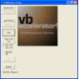
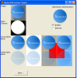
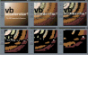

CD Track Listing Using freedb.org
CD Track Listing Using freedb.org
 Reading and Writing MP3 ID3v1 and ID3v2 Tags
Reading and Writing MP3 ID3v1 and ID3v2 Tags
 Transparent GDI Sprite Library
Transparent GDI Sprite Library

DIB Sections Index
Alpha Image CreatorAs described in the Alpha DIBSection article, if you want to draw an image which has per-pixel-alpha using the AlphaBlend call, then you need a bitmap with an alpha channel and R,G,B components which have been pre-multiplied. These bitmaps are hard to come across in the wild, hence this utility to assist with creating them. Last Updated: 5 September 2003 | |
Resampling with AlphaIf you want to change the size of a bitmap, you quickly find that standard techniques such as GDI's StretchBlt aren't particularly good and the result is usually very pixelated. Resampling is a technique which smooths the contribution of each pixel whilst changing the size, and although it takes more computation it provides a vastly better output. However, if you're trying to resize a bitmap with a transparent area, resampling can cause problems too because it tends to pull the "transparent" background colours into the image. This problem can be resolved by introducing alpha into the resampling method. Last Updated: 25 April 2003 | |
|  | True Colour DIBSectionThis article describes in detail the DIB Section techniques used in the vbAccelerator Image Processor. It describes what DIB Sections are, how to use them and provides True Colour DIBSection class I wrote to wrap up the DIB Section. Last Updated: 13 January 2003 |
|  | Alpha DIBSectionsThis article provides an enhanced DIBSection class which allows you to create and draw images with per-pixel alpha. The alpha component of a pixel allows you to determine how transparent you would like a pixel to be. This concept is being increasingly used in the Windows UI to enhance the user experience with accurately blended drop-shadows and partially transparent objects. Note that system alpha-blending is not available on Win95 or NT. If you want to display an alpha-image on these systems you have use your own code routine to implement AlphaBlend. Sample code is provided to do this. Last Updated: 13 January 2003 |
|  | 256 Colour DIBSectionsThe Image Processing using DIBSections sample provided on this site shows you how to implement a True-Colour DIBSection in VB. This is great for code which needs an effectively unlimited number of colours to perform effectively (such as blurring, sharpening, resampling and so on) but if you are interested in high-performance graphics effects it isn't the quickest way. Last Updated: 13 January 2003 |